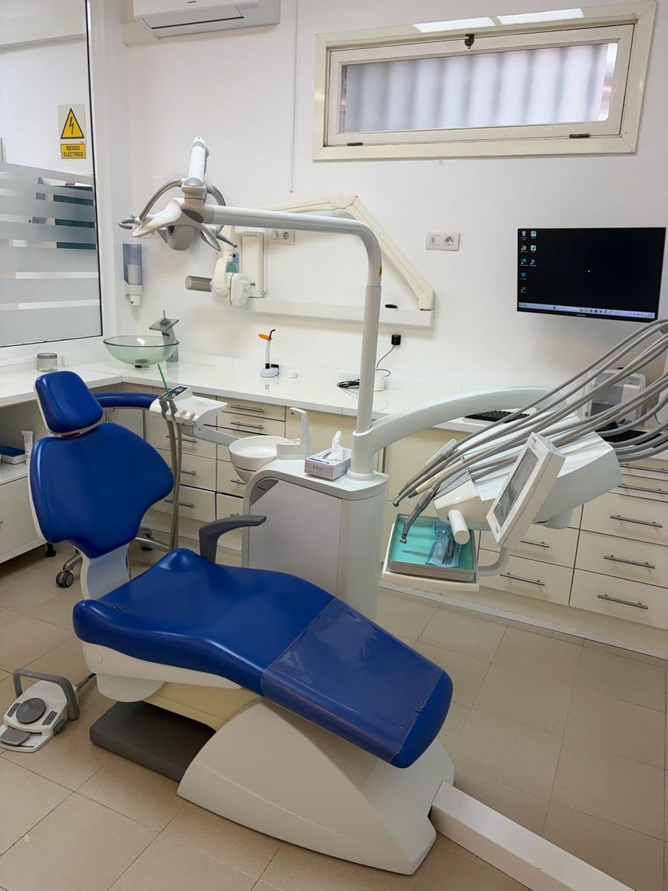

Coronas
Funda que cubre y protege un diente muy destruido o endodonciado. De circonio o cerámica, con aspecto natural.
Odontología integral · La Orotava
Reponemos dientes dañados o perdidos con prótesis fijas y removibles hechas a medida, con materiales de alta calidad y un ajuste preciso para que comas y sonrías con naturalidad.

Ajuste precisomateriales de alta calidad
En qué consiste
La prótesis dental es la parte de la odontología que sustituye o reconstruye dientes. Puede ser fija —coronas, puentes o prótesis sobre implantes— o removible, que el propio paciente se quita para limpiarla.
Cada prótesis se fabrica a medida en un laboratorio dental a partir de las medidas de tu boca. Cuidamos el color, la forma y la mordida para que se integre con tus dientes y puedas masticar con comodidad. Si buscas la máxima estabilidad, te explicaremos también las opciones sobre implantes.
Indicaciones
Ventajas
Recuperas la capacidad de comer con normalidad y comodidad.
Color, forma y brillo ajustados a tus dientes.
Una corona protege a un diente debilitado frente a las fracturas.
Un buen ajuste evita roces, llagas y molestias.
Paso a paso
Valoramos tu caso y te explicamos las opciones de prótesis, con presupuesto cerrado.
Preparamos los dientes si es necesario y tomamos medidas precisas de tu boca.
Comprobamos el ajuste, el color y la forma antes de terminar la prótesis.
Colocamos la prótesis definitiva, ajustamos la mordida y te explicamos cómo cuidarla.
¿Tienes dudas sobre tu caso?
En la primera visita te lo explicamos todo, sin compromiso.
Preguntas frecuentes
¿Tienes otra pregunta? Escríbenos o llámanos y te atendemos encantados.
El circonio es muy resistente, no tiene metal y ofrece un aspecto más natural, sobre todo junto a la encía. La metal-porcelana sigue siendo una opción válida en algunos casos. Te aconsejaremos según la zona y tu mordida.
Muchos años con una buena higiene y revisiones. Factores como apretar los dientes (bruxismo) pueden acortar su vida, y en ese caso te recomendaremos una férula de protección.
El implante no necesita tallar los dientes vecinos y conserva el hueso, por eso suele ser la primera opción. El puente puede ser adecuado cuando los dientes vecinos ya necesitan coronas. Lo valoramos contigo.
A veces sí: se puede reparar o rebasar para mejorar el ajuste. Si está muy desgastada, conviene hacer una nueva.
Sí, con una dentadura fija sobre implantes. Es la solución que más cambia la calidad de vida de quienes llevan prótesis completa.
También te puede interesar
Reponemos un diente perdido sin tocar los dientes vecinos, con una corona de aspecto natural.
Ver tratamientoSoluciones All-on-4 y All-on-6 para quienes han perdido todos los dientes o llevan dentadura postiza.
Ver tratamientoTratamiento de conductos para salvar dientes dañados o con dolor, de forma cómoda.
Ver tratamientoContacto
Av. Mayorazgo de Franchi, 16
Edf. Montymar, Local 1
38300 La Orotava, Santa Cruz de Tenerife
Lunes, martes, miércoles y viernes
9:00 – 17:00
Jueves
11:00 – 19:00